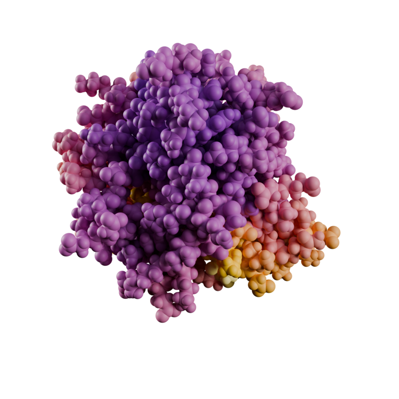

import molecularnodes as mn
canvas = mn.Canvas(mn.scene.Cycles(samples=32), resolution=(720, 480))Python API
Introduction to the API and the quirks of programming in Blender
The API is Experimental
Molecular Nodes was first built as an add-on for Blender, intended to be used through the GUI.
A lot of improvements have been made to now allow a scriptable interface, but a lot of these changes should still be considered experimental and may change in future versions. The version is pinned to the versions of Blender it is intended for, so while MN is currently version 4.5, it should not be considered that stable.
The quirks of progamming within Blender are numerous and will likely remain regardless of version.
Working in Blender
When scripting with Molecular Nodes, it’s important to remember that everything we do doesn’t work in isolation. All of the objects we add & changes we make happen within a “3D scene” inside of Blender, so deleting one thing or another doesn’t always clean up and reset everything you might expect.
Blender itself has a very extensive python API, accessible through the bpy module. Molecular Nodes is designed so that for most general usage you shouldn’t have to ever directly use bpy, but all of the complex settings and controls are still always accessible through that module.
Blender does release the bpy module on pypi, which let’s us
Installation
If installed inside of Blender as an add-on, you can script using MN in the python console or when running scripts through Blender.
You can also install and use inside of your own python projects.
Python Versions
molecularnodes is only compatible with python==3.11
Blender is very particular about python versions (and especially numpy versions). Blender adheres to the VFX Reference platform which determines python and common package versions to be used across multiple VFX software for consistency.
Because of this, the bpy package upon which molecularnodes is build is locked to python==3.11 and in particular numpy==1.26. Going outside of these very particular versions is recipe for distaster. The first Blender release of 2026 will increase to 3.13 and 2.3 repsectively.
Blender (bpy) is listed as an optional dependency for MN so that when installing inside of Blender there isn’t a double up with the bunlded bpy. This means you’ll need to always manually request it when installing or add it as a requirement to your own project.
pip install molecularnodes[bpy]Getting Started
There are two main classes you will interact with, the Molecule and the Trajectory.
Molecule- Intended for static structures, downloaded from the PDB or loaded locally
- Uses
biotiteas the backend for parsing files and storing data as abiotite.structure.AtomArray - doesn’t support selection strings
Trajectory- For MD simulation data
- Uses
MDAnalysisas the backend, keeping aMDAnalysis.Universeupdating in the background to update positions - supports selection strings and transformations
How you script with each is unfortunately slightly different when it comes to selections, but will hopefully in the future be unified.
Molecules
To get started, with import the module start a new scene be creating out Canvas object. This object is how we change settings for how the scene will render and other related settings sich as resolution.
Add a Molecule
The mn.Molecule can take a AtomArray from the biotite package directly, or it has the mn.Molecule.fetch and mn.Molecule.load class methods to download directly from the PDB or load a local file.
After loading the molecule, to be able to see anything we must first add a style. Then we can frame the camera on the object and take a snapshot.
mol = mn.Molecule.fetch("4ozs")
mol.add_style(mn.StyleCartoon())
canvas.frame_object(mol)
canvas.snapshot()canvas.clear()
canvas.background = (0, 0.5, 0.5, 1.0)
canvas.camera.lens = 130
mol = mn.Molecule.fetch("9MD2")
mol.add_style(
mn.StyleCartoon(peptide_loop_radius=0.4), material=mn.material.AmbientOcclusion()
)
canvas.frame_object(mol)
canvas.snapshot()canvas.frame_view(mol, (-3.14, 0, 0))
canvas.snapshot()canvas.clear()
canvas.engine = "eevee"
canvas.resolution = (800, 800)
canvas.transparent = True
mol = mn.Molecule.fetch("Q8W3K0", database="alphafold")
mol.add_style(mn.StyleCartoon(), color="pLDDT", material=mn.material.AmbientOcclusion())
canvas.frame_view(mol)
canvas.snapshot()Trajectories
import MDAnalysis as mda
from MDAnalysis.tests.datafiles import PSF, DCD
from MDAnalysisData import datasets
from MDAnalysis import transformations
from MDAnalysis.analysis import rms, align
import numpy as np
import matplotlib.cm as cm
canvas = mn.Canvas(mn.scene.Cycles(samples=16), (800, 800), transparent=True)Initial snapshot of the Universe
The simplest rendering is just loading in the Trajectory, adding a style and then rendering an image. The style can be specified as a string, or using mn.StyleSpheres() to also specify values for the style rather than updating them later.
u = mda.Universe(PSF, DCD)
traj = mn.Trajectory(u)
traj.add_style("vdw")
canvas.frame_view(traj)
canvas.snapshot()mda.Universe.
Add styles to the universe based on some MDA selectrion string
We can clear all existing styles on the Trajectory, and selectively add them based on some selection. The selections can be AtomGroup or strings. If a string, first the existence of a Named Attribute is checked and if it exists that is uses as a boolean to apply the selection. If the attribute doesn’t exist, the string is used as an MDAnalysis selection string. This is equivalent to doing u.select_atoms() and passing that atom group as a selection.
median = np.median(traj.atoms.positions, axis=0)
traj.styles.clear()
(
traj
.add_style(mn.StyleSpheres(), selection = f"prop x > {median[0]}")
.add_style(mn.StyleSpheres(), selection=f"prop x <= {median[0]}", color=(0,0,0,1))
)
canvas.frame_view(traj)
canvas.snapshot()canvas.clear()
rot = [transformations.rotate.rotateby(90,direction=[0,1,0],point=np.zeros(3))]
u = mda.Universe(PSF, DCD, transformations=rot)
g2 = mn.Trajectory(u).add_style(mn.StyleSpheres())
canvas.frame_view(g2)
canvas.snapshot()Coloring Atoms Based on Computed Values
Run analysis and compute values.
adk = datasets.fetch_adk_equilibrium()
u = mda.Universe(adk.topology, adk.trajectory)
average = align.AverageStructure(u, u, select="protein and name CA", ref_frame=0).run()
ref = average.results.universe
aligner = align.AlignTraj(u, ref, select="protein and name CA", in_memory=True).run()
c_alphas = u.select_atoms("protein and name CA")
R = rms.RMSF(c_alphas).run()
u.add_TopologyAttr("tempfactors")
protein = u.select_atoms("protein")
for residue, r_value in zip(protein.residues, R.results.rmsf):
residue.atoms.tempfactors = r_valueCompute a numpy array of color values (Red, Green, Blue, Alpha) that we can then store on the mesh object inside of Blender that will be used for coloring in the final render.
viridis = cm.get_cmap('inferno')
col_array = u.atoms.tempfactors
col_array /= col_array.max()
col_array = viridis(col_array)
col_array/var/folders/r4/ym_ncgbd3qddtxqvrmhps8q80000gn/T/ipykernel_98258/3304747087.py:1: MatplotlibDeprecationWarning: The get_cmap function was deprecated in Matplotlib 3.7 and will be removed in 3.11. Use ``matplotlib.colormaps[name]`` or ``matplotlib.colormaps.get_cmap()`` or ``pyplot.get_cmap()`` instead.
viridis = cm.get_cmap('inferno')array([[0.453651, 0.103848, 0.430498, 1. ],
[0.453651, 0.103848, 0.430498, 1. ],
[0.453651, 0.103848, 0.430498, 1. ],
...,
[0.832299, 0.283913, 0.257383, 1. ],
[0.832299, 0.283913, 0.257383, 1. ],
[0.832299, 0.283913, 0.257383, 1. ]])Create the Trajectory object that will be visualised inside of Blender. After initialising it, we store the computed colors as a Named Attribute on the mesh with the store_named_attribute() function. These values can now be accessed in the rendering pipeline.
When we add our style, we given it the name of our Named Attribute which will be used for coloring the final mesh. In this example I render both as spheres and also as ribbon backbone - both of which use the colors we computed. The ribbon backbone takes whatever color value is stored on the alpha carbon.
canvas.clear()
traj = mn.Trajectory(u)
traj.store_named_attribute(col_array, "custom_color")
traj.add_style(mn.StyleSpheres(radius=0.8), color="custom_color")
canvas.frame_view(traj)
canvas.snapshot()
traj.styles.clear()
traj.add_style(mn.StyleRibbon(quality=6, backbone_radius=1.5), color="custom_color")
canvas.frame_view(traj)
canvas.snapshot()

A sub-selection of atoms
When adding a style, we can ensure it is only applied to some selection of atoms. The selection can be an AtomGroup or a string. In this case we pass an AtomGroup and the selection is only applied to those atoms from the group.
canvas.clear()
adk = datasets.fetch_adk_equilibrium()
u = mda.Universe(adk.topology, adk.trajectory)
traj = mn.Trajectory(u)
traj.add_style(mn.StyleSpheres(), selection=u.atoms[u.atoms.names == "CA"])
canvas.frame_view(traj.get_view())
canvas.snapshot()